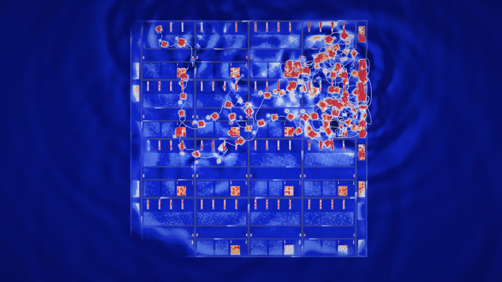

BOSTON — A cancer-killing virus has stopped pancreatic tumours from growing or spreading in three patients in a US early-safety trial, New Scientist reports, with all three still alive and their disease clinically stable.[1] The first patient, treated a year ago with a tumour seven centimetres across, and two treated since, had cancer confined to the pancreas at injection; none of the tumours has grown further, said Masato Yamamoto of the University of Minnesota, who led the treatment's development, presenting at the American Society of Gene and Cell Therapy's annual meeting in Boston this month.[1]
The dose was one-tenth of the eventual target. “We only injected one-tenth of the dose we are eventually aiming at, so the efficacy is better than I expected, especially as this is pancreatic cancer,” Yamamoto said. Pancreatic tumours resist treatment because their exteriors are tough and fibrous — “they're hard as hockey pucks,” in his words — blocking chemotherapy, while the disease usually allows three to six months after diagnosis. Fifteen further patients will now receive higher doses to find the optimum level.[1]
The thread kept the scale in view. One reader counted 25 registered clinical trials of oncolytic viruses for pancreatic cancer alone; another asked whether three uncontrolled patients can be called better than doing nothing.[2] Kai Brown, a pancreatic surgeon at Royal North Shore Hospital in Sydney, told the paper that “the history of oncology is littered with promising early signals that vanished by the time rigorous phase III testing was done.”[1] The story's 510-point rise since yesterday evening's edition is the day's largest move.[2]
Anthropic says Claude has solved two open problems in theoretical physics, both concerning black holes and the search for quantum gravity. In the first, the model completed a calculation physicists set up more than 20 years ago but never finished, showing that a sudden transition associated with black-hole formation persists even where spacetime no longer has a definite shape. In the second, it found the exact limit of the simplest version of a technique used to test candidate theories of quantum gravity. Preprints accompany the post.[3]
The company draws the boundary itself: “Neither result describes our own universe directly, and neither has practical applications,” the post says — both results live in simplified model universes studied through holographic duality, which recasts questions about gravity as questions about quantum systems in one dimension fewer.[3]
Readers who opened the preprints called the second result the stronger one — Claude proved an upper limit on black-hole mass consistent with a given central charge, which one put as making the theory “a consistent theory of quantum gravity.” Another noted it appeared as a bullet point in a product announcement.[4]

Architect Labs has introduced Frostbite, a general-purpose CPU with a new instruction set that its AI systems “discovered, designed, and verified end-to-end,” iterating autonomously over the compiler, ISA, microarchitecture, RTL, verification and final GDS chip layout. The firm reports 4.59× the performance-per-watt of a “modern, silicon-proven superscalar (dual-issue, in-order) CPU core” across 25 workloads, 15 of them held back until final evaluation. The architecture is built on interaction nets, where every step is local, every dependency explicit, and every value has exactly one owner.[5]
The thread asked for corroboration. One reader questioned holding back evaluation criteria at all (“This isn't LLM training”); another called the number of claims “absolutely breathtaking” and asked for a sober human overview, recalling the Mill CPU as an architecture that promised similarly and shipped never.[6]
“I can tell you wrote this yourself” were among the first words an honours supervisor said about a 10-page progress report on the control of flapping-wing micro aerial vehicles — and the student, who writes under the name Em, was unsure whether to take it as praise until he added: “I've been sent a lot of reports written by AI.” She had drafted the 5,000 words in 48 hours after mistyping the deadline in her own calendar.[7]
Her account of the degree runs the other way: assignment documents “strongly encouraged” to explore AI, which she says becomes the clear understanding that students are expected to use it and disadvantaged by not using it. She describes days spent prompting an AI for eight hours in a windowless lab as “soul crushing,” and says she does not want to outsource her thinking to it.[7]
The commentariat split along familiar lines — 278 of them, the day's largest thread. One reader argued the same objection was once made against CAD and finite-element analysis in engineering; another pointed out that the essay itself misspells “write” as “right” — evidence, the thread suggested, for using AI as a proofreader rather than a ghostwriter.[8]
Carnival Corporation, the world's largest luxury cruise operator, emitted nearly ten times more sulphur oxide around European coasts than all 260 million of Europe's cars in 2017, according to an analysis by sustainable-transport group Transport & Environment that resurfaced on the front page this week. Royal Caribbean ranked second, at four times the car fleet. Spain, Italy and Greece were the most-exposed countries; Barcelona, Palma de Mallorca and Venice the most-impacted ports, followed by Civitavecchia and Southampton.[9]
The thread dated the numbers. The multiple predates the International Maritime Organization's 2020 cap, which cut permitted fuel sulphur from 3.5% to 0.5% in what one reader linked as shipping's biggest fuel-rule change in decades — so the ten-times figure is a pre-cap snapshot, not a current measurement. Other readers noted that container ships burn the same bunker fuel for the same cost reasons.[10]
Pete Warden, co-creator of the Moonshine voice models and a longtime deep-learning engineer, argues in a Data Exchange interview with Ben Lorica that AI increasingly wants to run locally rather than in the cloud: open-weight models are improving quickly, quantization now fits capable models on laptops and in browsers, and voice — where round-trip latency decides whether an interface feels natural — is the application that makes locality visible. The conversation also covers specialized versus end-to-end speech models, the economics of local inference, and hardware approaches that could challenge GPU-centric infrastructure.[11]
The thread took the sceptic's chair alongside the believer's. One reader argued local AI matters mostly for narrow scenarios, while models-as-infrastructure evolve like the internet did; another countered that when every service ships its own walled assistant, the only way to bridge them will be an assistant you run yourself. A third noted the debate rhymes with decades of self-hosting advocacy, which most consumers have declined regardless of cost.[12]
A pull request by Niels Mouha fixes a buffer overflow in OpenSSL's EVP_EncodeBlock() — CVE-2026-121481, carried on the thread at CVSS 9.8 — by returning −1 for invalid inputs: NULL buffers, negative lengths, and inputs whose encoded size does not fit in an int. The bug is reachable from the command line: a very large −proxy_pass password to openssl s_client reaches the path, with GOST accepting such passwords when supplied through an environment variable. The fix pattern mirrors CVE-2021-23840, and carries branch labels for master, 4.0 and 4.1.[13]
The reachability question ran through the thread. One programmer's quick read puts the malfunctioning inputs above roughly 1.5 GB — “EVP_EncodeBlock is a function that encodes base64,” he noted — and a concern quoted from review holds that callers casting the return value to size_t unchecked may mishandle the new −1. Whether the 9.8 describes an exposed socket or an obscure path depends, as one reader put it, on which OpenSSL you run: several suspected only the 4.x series is affected.[14]
MIT OpenCourseWare has published RES.16-002, “How to CAD Almost Anything,” a non-credit workshop by instructor Andy G. Eskenazi of the Aeronautics and Astronautics department that teaches computer-aided design through reverse engineering — a mug, a bottle, a Saturn V rocket, jet-engine blades, a crash-test dummy — rather than by following engineering drawings. Materials cover Solidworks, Creo, Fusion, Inventor, Onshape and NX, each with companion video playlists.[15]
Readers mostly traded learning paths: one linked the direct lecture playlist; another noted the course stops short of photo-to-3D and AI-assisted workflows that now exist alongside it; a third credited a free YouTube series for teaching him Solidworks end to end.[16]
PostgreSQL 19, released November 19, adds a REPACK command that reclaims disk space and reorganizes tables, with a CONCURRENTLY mode that does not block reads or writes; a WAIT command for read-your-writes consistency on standbys; logical replication that can be enabled without a restart when wal_level is replica; and, at last, replication of sequence values. Autovacuum now works indexes in parallel, I/O workers scale automatically, and RADIUS support is gone — its UDP transport judged unfixably insecure.[17]
The thread was brief and warm. One database administrator asked whether this is the rare .0 release safe to install before .1 — the notes themselves list the incompatibilities to check first.[18]
FFmpeg 9.1, codenamed “Gauss,” adds ASTC texture encoding and decoding via libastcenc with KTX 1.0 container support, an extensively improved AAC encoder, an APV Vulkan encoder, an iTerm2 inline-image muxer, LCEVC payload handling, and a new graph-based bitstream filtering API — per the changelog posted in the release thread by the maintainer of the project's Windows builds. Source is on ffmpeg.org; the project distributes code only.[19][20]
| Stories chosen | 10 |
| Fresh stories | 8 |
| Follow-ups returning | 2 |
| Carried in digest | 0 |
| Combined points | 3,512 |
| Combined comments | 1,619 |
| Most-discussed story | 278 cmts |
| Biggest mover | +510 pts |
WANTED: one day off from patching servers. Serious inquiries within the OpenSSL thread.
FREE COURSE: CAD almost anything, mug to Saturn V, six toolchains included, no credit offered — MIT OpenCourseWare.
The day's biggest mover was a three-patient cancer trial up 510 points since yesterday evening; the day's biggest argument — 278 comments — was over who actually wrote the coursework.
“Solves two open problems.” Anthropic's own post bounds the result: “Neither result describes our own universe directly, and neither has practical applications.” The proofs hold in simplified model universes; the headline verb is exact for the mathematics and narrower than it sounds for physics.
“Ten times more sulphur oxide than all of Europe's cars (2019).” The Transport & Environment analysis measures 2017 emissions and was published in 2019. As the thread's most-cited correction notes, the IMO's 2020 cap cut marine fuel sulphur from 3.5% to 0.5% — the multiple is a pre-cap snapshot, not a current measurement.
CVSS 9.8, precisely. The rated overflow sits in EVP_EncodeBlock(), a base64 helper; one programmer's reading puts failing inputs above roughly 1.5 GB, and the fix returns −1 rather than repairing a common path. The score prices the worst case, not the typical deployment.
“4.59× performance-per-watt.” Frostbite's multiple is measured against a dual-issue, in-order core — a modest baseline — on 25 workloads, 15 held back until final evaluation. It is not a comparison against a flagship out-of-order core.
A follow-up leads: the pancreatic-cancer virus trial returned at 818 points, up 510 since yesterday evening's edition, with Claude's black-hole proofs back up 223. Eight fresh stories fill the rest of the page; every source loaded, and five photographs arrived with them.
Method: compiled at 14:00 UTC (08:00 US Central) on Friday, November 20, 2026, from the Hacker News front page via the Algolia search API — 30 candidates returned against 50 requested. Ten stories were chosen by snapshot score after excluding every item covered in the previous four editions (about 48 hours); two returned as Follow-ups under the +40%-and-+150-point rule (pancreatic-cancer trial, +510; Claude black-hole proofs, +223). No story required the digest and no second wire was needed. Points and comments are snapshot values and will drift. Photographs are each source's own preview images, compressed for delivery.